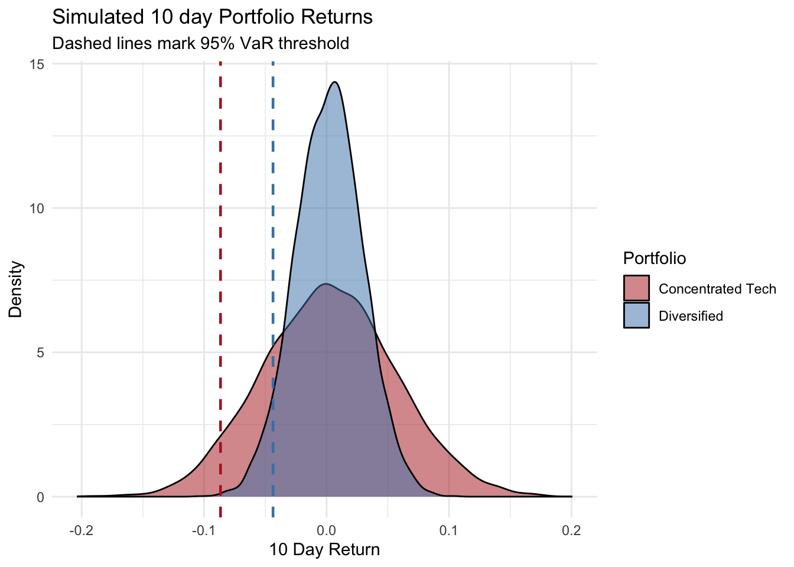

Portfolio Diversification and Value at Risk: A Comparative Analysis
Monte Carlo Simulation of Sector Diversified and Concentrated Equity Portfolios
This report uses Monte Carlo simulation to compare the 10 day Value at Risk and Conditional Value at Risk of a diversified equity portfolio against a concentrated technology portfolio, both equally weighted across 11 large cap stocks. The diversified portfolio’s simulated risk was consistently about half that of the concentrated portfolio, a gap that is consistent with a lower average correlation among its holdings. Results were validated through historical backtesting. Both portolios’ return distributions were found to be leptokurtic, which is a source of tail risk that is not captured by the model’s assumption of normality.
Value at Risk, Monte Carlo simulation, portfolio diversification, correlation analysis, risk management, backtesting
1 Executive Summary
This analysis compares the risk profiles of two equally weighted equity portfolios (containing 11 stocks each) over a five year period from 2021 to 2026. The first portfolio is diversified, containing stocks from a variety of sectors (technology, energy, healthcare, financial services, consumer staples, and industrials). The second portfolio is concentrated containing 11 large cap technology stocks.
The diversified portfolio exhibited a significantly lower average pairwise correlation between holdings (0.25 compared to 0.45). Moreover, at a 10 day horizon, both its Value at Risk (VaR) and Conditional Value at Risk (CVaR) were roughly half that of the concentrated portfolio at both 95% and 99% confidence intervals (e.g. 95% VaR of 4.37% compared to 8.65%).
Historical backtesting confirmed that both models were reasonably well calibrated, though both showed evidence of leptokurtic return behavior, more pronounced in the diversified portfolio, indicating that the assumption of a normal distribution in the simulation modestly understates the extreme tail risk in both cases.
Together, these results provide a quantified illustration of a core risk management principle: sector diversification meaningfully reduces portfolio level risk, even though it cannot eliminate the systematic market risk common to all equity holdings.
2 Introduction
A central tenet of portfolio risk management is that diversification reduces risk. By holding assets that do not move in perfect unison, an investor can reduce the volatility of a portfolio without necessarily sacrificing expected return. This principle is intuitive and widely taught, but it is less commonly demonstrated with a direct, quantified comparison. How much less risky, precisely, is a diversified portfolio than a concentrated one, and through what mechanism does that reduction occur?
This report addresses that question empirically. Two equally weighted, eleven stock portfolios are constructed: one spanning six economically distinct sectors, and one concentrated entirely within large cap technology holdings. Using Monte Carlo simulation, the 10 day Value at Risk and Conditional Value at Risk of each portfolio are estimated and compared, with the underlying correlation structure examined as the mechanism driving any difference in risk. The resulting model is then validated against historical data through backtesting and an assessment of return distribution characteristics, to establish not only what the model predicts but how reliable that prediction is.
Packages Used
library(tidyverse)
library(ggplot2)
library(tidyquant)
library(patchwork)
library(MASS, exclude = "select")
library(scales)
library(knitr)
library(kableExtra)
library(e1071)3 Data & Methodology
3.1 Universe Selection
Two 11 stock portfolios were constructed to isolate the effect of sector diversification on portfolio risk. The diversified portfolio spans six sectors: technology (AAPL, MSFT), energy (XOM, CVX), healthcare (JNJ, PFE), financial services (JPM, BAC), consumer staples (PG, KO), and industrials (CAT). The concentrated portfolio consists entirely technology holdings (AAPL, MSFT, NVDA, GOOGL, META, AMZN, AVGO, CRM, ADBE, ORCL, AMD). Both portfolios were restricted to large cap, highly liquid names with continuous listing histories over the full sample period, minimizing data quality issues such as gaps, delistings, or ticker changes.
Both portfolios are equally weighted across their holdings. This isolates the effect of correlation structure on portfolio risk, independent of any weighting or optimization decisions. A market cap weighted or risk parity approach would be expected to alter the magnitude of the results but not the directional conclusion that diversification reduces portfolio level risk.
3.2 Data Source & Period
Daily adjusted closing prices were retrieved via the tidyquant package’s tq_get() function, which sources data from Yahoo Finance. The sample period runs from January 1, 2021 through September 2026, giving approximately five years of daily observations per stock. This is long enough to provide a stable estimate of the return covariance structure, while remaining recent enough to reflect current market relationships.
Adjusted closing prices, rather than raw closing prices, were used throughout, as they account for stock splits and remove artificial jumps in the price series that would otherwise distort return calculations.
Constructing the Portfolios
tickers_A <- c("AAPL", "MSFT", "XOM", "CVX", "JNJ", "PFE", "JPM", "BAC", "PG", "KO", "CAT")
tickers_B <- c("AAPL", "MSFT", "NVDA", "GOOGL", "META", "AMZN", "AVGO", "CRM", "ADBE", "ORCL", "AMD")
start_date <- "2021-01-01"
end_date <- "2026-09-07"
portfolio_A <- tq_get(tickers_A,
from = start_date,
to = end_date,
get = "stock.prices")
portfolio_B <- tq_get(tickers_B,
from = start_date,
to = end_date,
get = "stock.prices")
portfolio_A |>
group_by(symbol) |>
summarise(n = n(), n_na = sum(is.na(adjusted)))
portfolio_B |>
group_by(symbol) |>
summarise(n = n(), n_na = sum(is.na(adjusted)))3.3 Returns Calculation
Daily log returns were calculated for each stock as:
\[r_t=ln\left(\frac{P_t}{P_{t-1}}\right)\]
Log returns were chosen over simple percentage returns for three reasons: they are additive across time (simplifying aggregation to multiple day horizons), they treat gains and losses symmetrically, and they are the standard input assumption for Monte Carlo simulation under a lognormal price process.
Logarithmic Returns Calculation
portfolio_A <- portfolio_A |>
group_by(symbol) |>
arrange(date) |>
mutate(daily_return = log(adjusted / lag(adjusted))) |>
ungroup()
portfolio_B <- portfolio_B |>
group_by(symbol) |>
arrange(date) |>
mutate(daily_return = log(adjusted / lag(adjusted))) |>
ungroup()
portfolio_A |>
group_by(symbol) |>
summarise(mean_return=mean(daily_return, na.rm = T),
sd_return=sd(daily_return, na.rm = T),
.groups = "drop")
portfolio_B |>
group_by(symbol) |>
summarise(mean_return=mean(daily_return, na.rm = T),
sd_return=sd(daily_return, na.rm = T),
.groups = "drop")3.4 Monte Carlo Value at Risk Calculation
For each portfolio, the historical mean return vector and covariance matrix were estimated from the full daily return series. 10,000 simulated return scenarios were drawn from a multivariate normal distribution using these estimated parameters, preserving the empirical correlation structure between holdings. Simulated returns were aggregated into equally weighted portfolio returns and scaled to a 10 day horizon using the standard square root of time rule.
From the resulting simulated distribution, two risk measures were computed at both the 95% and 99% confidence levels:
Value at Risk (VaR): the maximum level of loss under normal market conditions at a percantage of time given by the confidence level.
Conditional Value at Risk or Expected Shortfall (CVaR/ES): the average loss that could occur beyond the confidence interval.
3.5 Model Validation
The simulation’s normality assumption was validated in two ways. First, historical backtesting compared each VaR estimate against realized 10 day rolling portfolio returns over the full sample period, checking whether the observed breach rate matched the theoretical expectation.
Second, excess kurtosis was computed for each portfolio’s realized return series to directly assess the degree of fat tailedness relative to a normal distribution.
4 Correlation Analysis
Correlation between holdings is a primary mechanism through which diversification reduces portfolio risk. The less two assets move together, the more their individual fluctuations offset one another at the portfolio level. To assess this, pairwise Pearson correlation coefficients were computed across all daily log returns within each portfolio.
The figure below presents the resulting correlation structure as heatmaps, with holdings ordered identically within each panel to allow direct visual comparison.
Correlation Matrix
returns_wide_A <- portfolio_A |>
filter(!is.na(daily_return)) |>
select(date, symbol, daily_return) |>
pivot_wider(names_from = symbol, values_from = daily_return)
returns_wide_B <- portfolio_B |>
filter(!is.na(daily_return)) |>
select(date, symbol, daily_return) |>
pivot_wider(names_from = symbol, values_from = daily_return)
cor_matrix_A <- cor(returns_wide_A |>
select(-date),
use = "pairwise.complete.obs")
cor_matrix_B <- cor(returns_wide_B |>
select(-date),
use = "pairwise.complete.obs")
cor_matrix_A
cor_matrix_B
avg_cor <- function(mat){
mean(mat[upper.tri(mat)])
}
avg_cor(cor_matrix_A)
avg_cor(cor_matrix_B)
min(cor_matrix_A[upper.tri(cor_matrix_A)])
min(cor_matrix_B[upper.tri(cor_matrix_B)])
max(cor_matrix_A[upper.tri(cor_matrix_A)])
max(cor_matrix_B[upper.tri(cor_matrix_B)])
which(cor_matrix_A == max(cor_matrix_A[upper.tri(cor_matrix_A)]),
arr.ind = TRUE)
which(cor_matrix_B == max(cor_matrix_B[upper.tri(cor_matrix_B)]),
arr.ind = TRUE)
plot_corr_heatmap <- function(cor_matrix, title){
cor_df <- as.data.frame(cor_matrix) |>
mutate(symbol1 = rownames(cor_matrix)) |>
pivot_longer(-symbol1, names_to = "symbol2",
values_to = "correlation")
ggplot(cor_df, aes(x = symbol1, y = symbol2,
fill = correlation))+
geom_tile()+
scale_fill_gradient2(low = "blue", mid = "white",
high = "red", midpoint = 0,
limits = c(-1,1))+
labs(title = title, x = NULL, y = NULL)+
theme_minimal()+
theme(axis.text.x = element_text(angle = 45,
hjust = 1))
}Heatmap
plot_corr_heatmap(cor_matrix_A,
"Diversified Portfolio - Correlation")+
plot_corr_heatmap(cor_matrix_B, "Concentrated Tech Portfolio - Correlation")
The concentrated technology portfolio exhibits a visibly warmer, but also more homogeneous correlation structure than the diversified portfolio. Its average pairwise correlation is 0.45, compared to 0.25 for the diversified portfolio. This gap shows the shared sensitivity of large cap technology stocks to a common set of drivers, like interest rate expectations, growth and duration risk, that pull returns in the same direction more consistently than in a portfolio consisting of stocks from multiple economically distinct sectors.
Examining the extremes of each correlation matrix reveals a more nuanced picture. The single highest pairwise correlation across either portfolio was actually found within the diversified one: Chevron Corporation (CVX) and Exxonmobil Holdings Corporation (XOM), two integrated oil majors with near identical exposure to crude oil and refining margins, correlate at 0.86, higher than any pair within the technology portfolio (the highest of which was 0.66). This illustrates that diversification, as constructed here, operates at the sector level rather than the holding level: two commodity producers from the same sector can move together almost as tightly as shares of a single company, even while the portfolio as a whole benefits from a lower average correlation across its other holdings. The tech portfolio’s correlation, by contrast, is more homogeneously elevated, without a comparably extreme outlying pair.
A further observation is that no pairwise correlation in either portfolio was negative. This is consistent with the presence of undiversifiable systematic risk. Diversification, as demonstrated here, reduces idiosyncratic, sector specific movement, visible in the lower average correlation of the diversified portfolio. It does not eliminate portfolio wide market risk.
5 Monte Carlo Value at Risk Simulation
Having established that the concentrated technology portfolio carries meaningfully higher average correlation among its holdings, this section quantifies the resulting difference in portfolio level risk using the Monte Carlo simulation described in the Methodology section above.
Monte Carlo Simulation
set.seed(123)
simulate_portfolio_var <- function(returns_wide, n_sims = 10000,
horizon_days,
confidence_levels = c(0.95, 0.99)){
returns_matrix <- returns_wide |>
select(-date) |>
as.matrix()
n_assets <- ncol(returns_matrix)
weights <- rep(1/n_assets, n_assets)
mu <- colMeans(returns_matrix, na.rm = T)
sigma <- cov(returns_matrix, use = "pairwise.complete.obs")
simulated_returns <- mvrnorm(n = n_sims, mu = mu, Sigma = sigma)
simulated_portfolio_returns <- simulated_returns %*% weights
simulated_portfolio_returns <- simulated_portfolio_returns * sqrt(horizon_days)
results <- lapply(confidence_levels, function(cl){
var_threshold <- quantile(simulated_portfolio_returns, probs = 1-cl)
cvar <- mean(
simulated_portfolio_returns[simulated_portfolio_returns<=var_threshold])
tibble(confidence = cl, VaR = -var_threshold, CVaR = -cvar)
}) |>
bind_rows()
list(
simulated_returns = simulated_portfolio_returns,
summary = results
)
}
var_results_A <- simulate_portfolio_var(returns_wide_A,
horizon_days = 10)
var_results_B <- simulate_portfolio_var(returns_wide_B,
horizon_days = 10)
var_results_A$summary
var_results_B$summaryAt the 95% confidence level, the diversified portfolio’s simulated 10-day VaR was 4.4%, compared to 8.7% for the concentrated technology portfolio, which is roughly twice that of the diversified one. This ratio holds consistently at the 99% confidence level (6.3% vs. 11.9%) and across both VaR and CVaR, with the concentrated portfolio’s risk measures running approximately 1.9–2.0 times those of the diversified portfolio at every level examined. The stability of this ratio across confidence levels indicates that the risk gap is driven primarily by the difference in correlation structure documented above, rather than by asymmetric tail behavior specific to one portfolio.
The following figure shows the full simulated return distributions:
Density Function of the Return Distributions
sim_df <- bind_rows(
tibble(portfolio = "Diversified", return = as.numeric(
var_results_A$simulated_returns)),
tibble(portfolio = "Concentrated Tech", return = as.numeric(
var_results_B$simulated_returns))
)
var_lines <- bind_rows(
var_results_A$summary |>
mutate(portfolio = "Diversified"),
var_results_B$summary |>
mutate(portfolio = "Concentrated Tech")
)
ggplot(sim_df, aes(x = return, fill = portfolio))+
geom_density(alpha = 0.5)+
geom_vline(data = var_lines |>
filter(confidence == 0.95), aes(xintercept = -VaR,
color = portfolio),
linetype = "dashed", linewidth = 0.8)+
scale_fill_manual(values = c("Diversified" = "steelblue",
"Concentrated Tech" = "firebrick"))+
scale_color_manual(values = c("Diversified" = "steelblue",
"Concentrated Tech" = "firebrick"))+
labs(title = "Simulated 10 day Portfolio Returns",
subtitle = "Dashed lines mark 95% VaR threshold",
x = "10 Day Return", y = "Density", fill = "Portfolio")+
guides(color = "none")+
theme_minimal()
The concentrated technology portfolio’s distribution is visibly wider and flatter than the diversified portfolio’s, this is due to a higher variance at the portfolio level. The higher variance is caused by its holdings’ higher average correlation, since less offsetting behavior among constituents means individual return shocks compound rather than cancel out.
The gap is stark enough that even the diversified portfolio’s 99% CVaR (7.19%) (its average loss in the worst 1% of modeled outcomes) remains below the concentrated portfolio’s 95% VaR (8.66%). A loss level the concentrated portfolio should expect to encounter with some regularity exceeds what the diversified portfolio’s model considers a severe, tail level event.
6 Model Validation
The Monte Carlo simulation above assumes that portfolio returns follow a multivariate normal distribution. This is a standard and analytically convenient simplification, but it is worth testing directly against the historical data rather than trusting it blindly. Two checks were performed: a historical backtest of the VaR thresholds against realized returns, and a direct measurement of excess kurtosis to assess the degree of leptokurtosis in each portfolio’s return distribution.
6.1 Historical Backtesting
Each portfolio’s 95% and 99% VaR estimates were compared against realized 10 day rolling returns over the full sample period. If a VaR model is well calibrated, the proportion of historical windows in which realized losses exceeded the VaR threshold (the breach rate) should closely match the theoretical exceedances implied by the confidence level (approximately 5% at the 95% level and 1% at the 99% level).
Historical Backtesting
historical_portfolio_returns_A <- returns_wide_A |>
select(-date) |>
as.matrix() %*% rep(1/11,11)
realized_10d_A <- zoo::rollapply(
historical_portfolio_returns_A,
width = 10,
FUN = sum,
align = "right")
var95_A <- var_results_A$summary$VaR[
var_results_A$summary$confidence == 0.95]
breaches_A <- sum(realized_10d_A < -var95_A)
breaches_rate_A <-breaches_A/length(realized_10d_A)
breaches_rate_A
var_99_A <- var_results_A$summary$VaR[
var_results_A$summary$confidence == 0.99]
breaches_99_A <- sum(realized_10d_A < -var_99_A)
breach_rate_99_A <- breaches_99_A / length(realized_10d_A)
breach_rate_99_A
historical_portfolio_returns_B <- returns_wide_B |>
select(-date) |>
as.matrix() %*% rep(1/11,11)
realized_10d_B <- zoo::rollapply(
historical_portfolio_returns_B,
width = 10,
FUN = sum,
align = "right")
var95_B <- var_results_B$summary$VaR[
var_results_B$summary$confidence == 0.95]
breaches_B <- sum(realized_10d_B < -var95_B)
breaches_rate_B <-breaches_B/length(realized_10d_B)
breaches_rate_B
var_99_B <- var_results_B$summary$VaR[
var_results_B$summary$confidence == 0.99]
breaches_99_B <- sum(realized_10d_B < -var_99_B)
breach_rate_99_B <- breaches_99_B / length(realized_10d_B)
breach_rate_99_BThe diversified portfolio’s backtest results were slightly conservative at the 95% level (3.5% observed vs. 5% expected) but showed a higher than expected breach rate at 99% (1.63% vs. 1%), this indicates that the model understates risk more severely in the extreme tail than in the moderate one. The concentrated technology portfolio, by contrast, backtested closer to its theoretical expectations at both confidence levels (5.16% vs. 5%, and 1.13% vs. 1%).
6.2 Excess Kurtosis
To investigate this pattern directly, excess kurtosis (the degree to which a distribution’s tails are heavier than the normal distribution’s) was computed for each portfolio’s realized daily returns.
The diversified portfolio’s returns exhibit an excess kurtosis of approximately 5.0 (the excess kurtosis of a normal distribution is 0), compared to 3.2 for the concentrated technology portfolio. Both values confirm pronounced leptokurtic, fat-tailed behavior in both portfolios, meaning that extreme moves occur more frequently than a normal distribution would predict, but the effect is notably stronger in the diversified portfolio. This is consistent with its larger deviation from expected breach rates in backtesting. A fatter tailed return distribution means the model’s normal distribution assumption is a weaker approximation.
One plausible explanation is that the concentrated portfolio’s higher inter asset correlation causes individual tail events to move together and partially average out at the portfolio level, while the diversified portfolio’s more idiosyncratic, less-correlated tail events compound into a fatter portfolio level tail. Confirming this mechanism, however, would require examining the kurtosis for each asset and correlation dynamics during tail events specifically, which is beyond the scope of this analysis.
Kurtosis
kurtosis(historical_portfolio_returns_A)
kurtosis(historical_portfolio_returns_B)6.3 Implications
Taken together, these results indicate that the Monte Carlo simulation’s normal distribution assumption provides a reasonable, if imperfect, approximation of portfolio risk for both portfolios closer to well calibrated at the 95% level, and modestly understating risk at the 99% level, particularly for the diversified portfolio. This is a well documented limitation of parametric VaR methods in financial applications generally, and does not undermine the core comparative finding of this analysis: the concentrated technology portfolio’s risk measures consistently exceeded the diversified portfolio’s by a factor of roughly two, across every metric and confidence level examined.
6.4 Summary of Results
The metrics discussed throughout this analysis are consolidated below, presenting each portfolio’s correlation structure, simulated risk, and model validation results side by side.
Summary Table
summary_table <- tibble(
Metric = c(
"Average pairwise correlation",
"VaR 95% (10-day)",
"VaR 99% (10-day)",
"CVaR 95% (10-day)",
"CVaR 99% (10-day)",
"Backtest breach rate (95%, expected 5%)",
"Backtest breach rate (99%, expected 1%)",
"Excess kurtosis"
),
Diversified = c(
percent(avg_cor(cor_matrix_A), accuracy = 0.01),
percent(var_results_A$summary$VaR[var_results_A$summary$confidence == 0.95], accuracy = 0.01),
percent(var_results_A$summary$VaR[var_results_A$summary$confidence == 0.99], accuracy = 0.01),
percent(var_results_A$summary$CVaR[var_results_A$summary$confidence == 0.95], accuracy = 0.01),
percent(var_results_A$summary$CVaR[var_results_A$summary$confidence == 0.99], accuracy = 0.01),
percent(breaches_rate_A, accuracy = 0.01),
percent(breach_rate_99_A, accuracy = 0.01),
round(kurtosis(historical_portfolio_returns_A), 2)
),
`Concentrated Tech` = c(
percent(avg_cor(cor_matrix_B), accuracy = 0.01),
percent(var_results_B$summary$VaR[var_results_B$summary$confidence == 0.95], accuracy = 0.01),
percent(var_results_B$summary$VaR[var_results_B$summary$confidence == 0.99], accuracy = 0.01),
percent(var_results_B$summary$CVaR[var_results_B$summary$confidence == 0.95], accuracy = 0.01),
percent(var_results_B$summary$CVaR[var_results_B$summary$confidence == 0.99], accuracy = 0.1),
percent(breaches_rate_B, accuracy = 0.01),
percent(breach_rate_99_B, accuracy = 0.01),
round(kurtosis(historical_portfolio_returns_B), 2)
)
)
summary_table |>
knitr::kable(align = c("l", "r", "r"),
col.names = c("Metric", "Diversified", "Concentrated Tech")) |>
kable_styling(bootstrap_options = c("striped", "hover", "condensed"),
latex_options = c("hold_position", "striped"),
full_width = FALSE) |>
row_spec(0, bold = TRUE, background = "#2c3e50", color = "white")| Metric | Diversified | Concentrated Tech |
|---|---|---|
| Average pairwise correlation | 25.15% | 45.15% |
| VaR 95% (10-day) | 4.37% | 8.69% |
| VaR 99% (10-day) | 6.26% | 12.04% |
| CVaR 95% (10-day) | 5.55% | 10.73% |
| CVaR 99% (10-day) | 7.19% | 13.9% |
| Backtest breach rate (95%, expected 5%) | 3.46% | 5.16% |
| Backtest breach rate (99%, expected 1%) | 1.63% | 1.13% |
| Excess kurtosis | 5 | 3.21 |
7 Conclusion
This report set out to quantify a foundational principle of risk management, that diversification reduces portfolio risk, using Monte Carlo simulation to compare a sector diversified equity portfolio against a portfolio concentrated in a single sector. The results provide clear, consistent evidence for this principle.
The concentrated technology portfolio’s holdings exhibited nearly double the average pairwise correlation of the diversified portfolio’s holdings (0.45 vs. 0.25), and this difference translated directly into portfolio level risk: the concentrated portfolio’s simulated 10 day VaR and CVaR were consistently 1.9 to 2 times those of the diversified portfolio, across both the 95% and 99% confidence levels. The magnitude of this gap was substantial enough that even the diversified portfolio’s 99% CVaR (its average loss in the worst 1% of modeled outcomes) remained below the concentrated portfolio’s 95% VaR, a routine risk threshold by comparison.
Model validation added two important qualifications to these findings. Historical backtesting confirmed both portfolios’ VaR models were reasonably well calibrated overall, though both exhibited breach rates at the 99% confidence level modestly exceeding theoretical expectations. This was traced to leptokurtic return behavior in both portfolios’ realized returns.
These findings offer a quantified, evidence-based illustration of why diversification is a central tenet of portfolio risk management. They also demonstrate the value of validating a risk model’s assumptions against real data rather than treating its outputs as ground truth: the normal distribution assumption underlying Monte Carlo VaR is a reasonable approximation for these portfolios, but not an exact one, and understanding where and why it breaks down is as important as the headline risk estimates themselves.